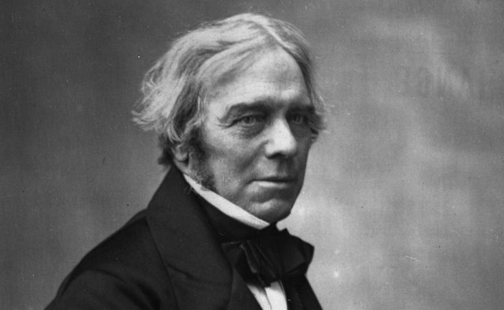
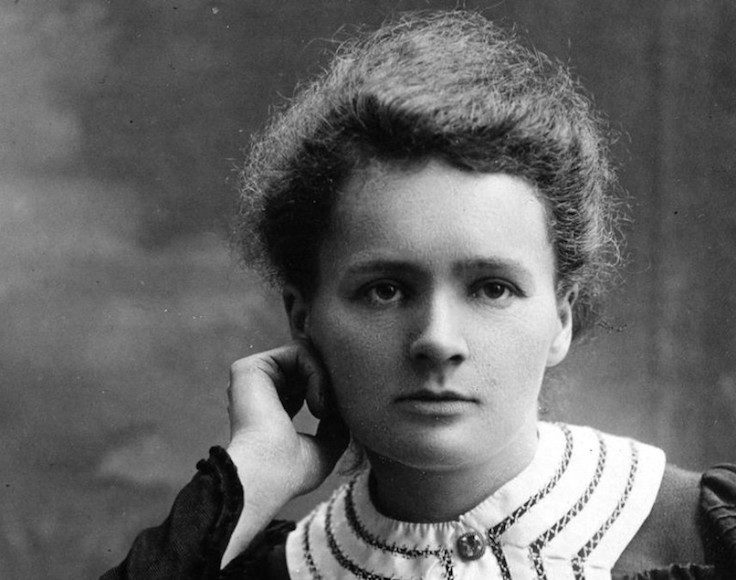
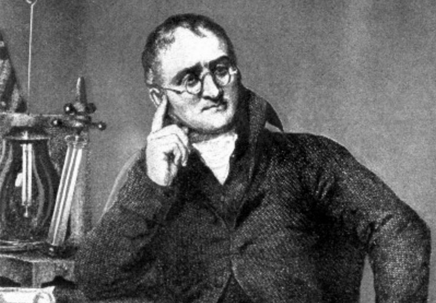
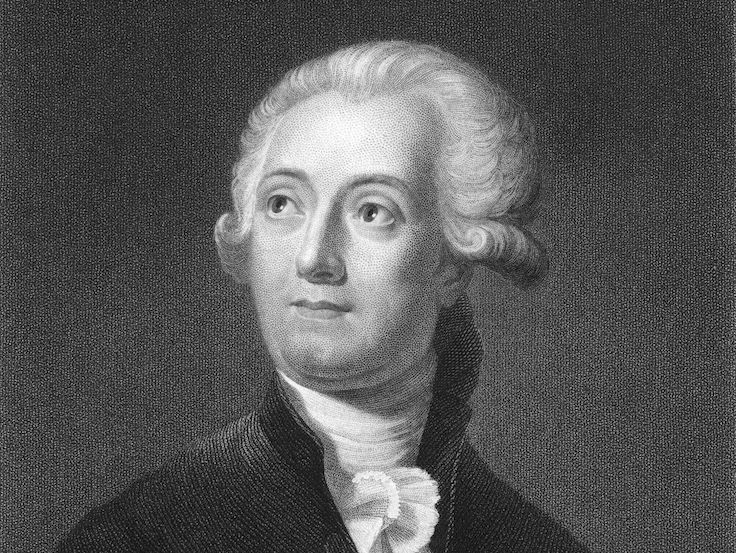
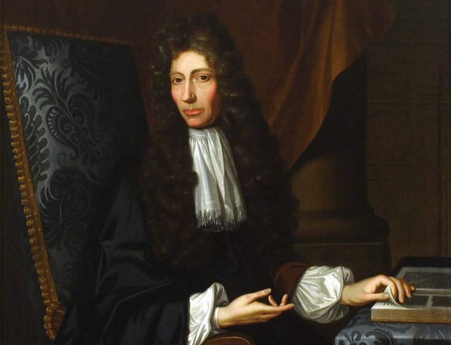
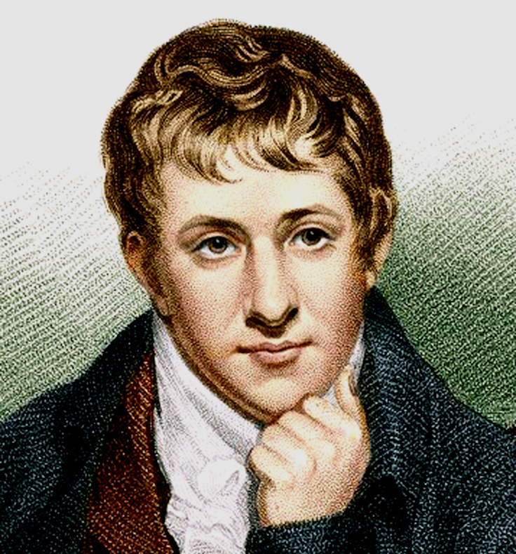
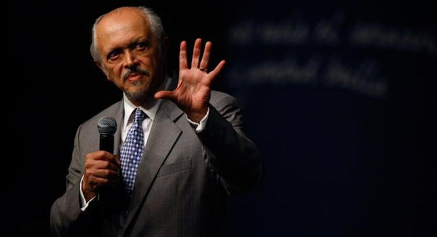
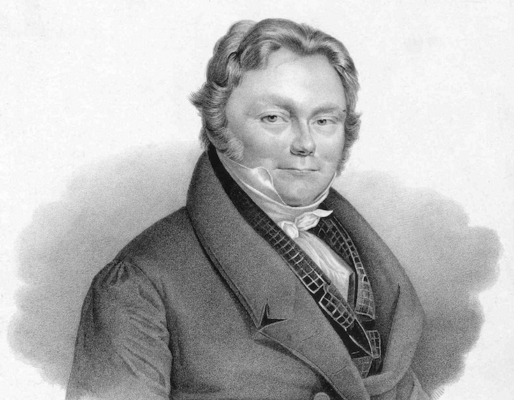
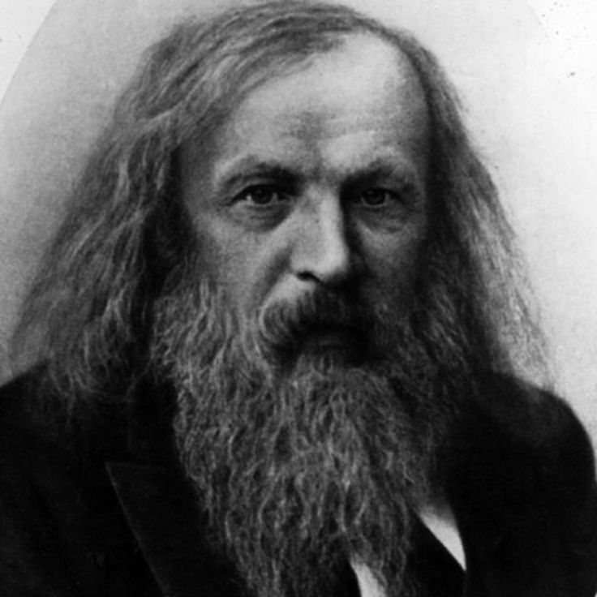
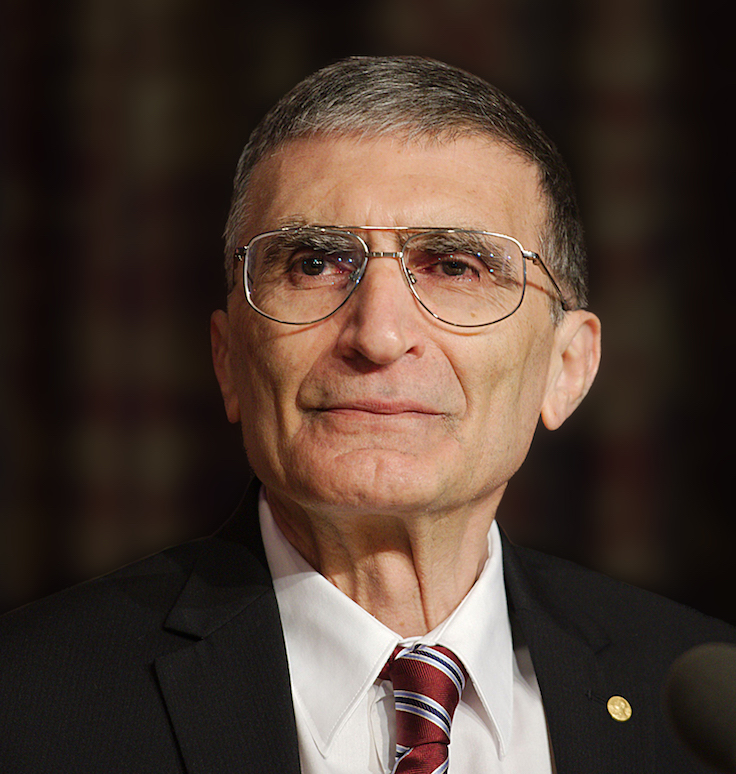

Michael Faraday (1791-1867)
Elektriğin pratik kullanımını geliştirdi. Elektromanyetizma ve elektrokimya araştırmaları sırasında Faraday, elektromanyetik indüksiyon ve elektrolizin prensiplerini keşfetti. Bunsen bekininin ilk biçimini ve elektromanyetik devir makineleri icat etti.
Daha fazlası için tıklayınız.Marie Curie (1867-1934)
Radyoaktivite ve radyumu keşfetti. Çifte Nobel ödüllü Polonyalı-Fransız Curie, radyumu keşfetti ve bundan yayılan radyoaktiviteyi inceledi.
Daha fazlası için tıklayınız.John Dalton (1766-1844)
Atomik teoriyi geliştirdi. Dalton, elementlerin boyut ve kütle olarak farklılık gösterdiklerini açıklayan teoriyi sundu ve göreceli atomik ağırlıkların ilkel bir tablosunu çıkardı.
Daha fazlası için tıklayınız.Antoine Lavoisier (1743-1794)
Oksijen ve hidrojeni fark etti ve isimlendirdi. Fransız bilimcinin titiz deneyleri, daha çok nicel bilim üzerinde yoğunlaştı.
Daha fazlası için tıklayınız.Robert Boyle (1627-1691)
Modern kimyanın kurulmasına yardım etti. İrlandalı kimyager, belli bir sıcaklıktaki kapalı bir sistem içinde mutlak basınç ve bir miktar gaz arasındaki ters orantılı ilişkiyi açıklayan Boyle kanununu geliştirdi.
Daha fazlası için tıklayınız.Humphry Davy (1778-1829)
Sodyum ve Potasyumu keşfetti. Elektroliz alanında öncü olan Kernevek Davy, birkaç yeni bor metalleri ve elementleri keşfetti. Bunlar arasında sodyum, potasyum, magnezyum, bor, ve baryum bulunuyor.
Daha fazlası için tıklayınız.Mario Molina (1943-Günümüz)
Kloroflorokarbon gazlarında öncü oldu. Frank Sherwoo Rowland ile birlikte CFC’ler üzerine önemli miktarda araştırma yaptı ve bu süreçte Antarktik üzerindeki ozon tabakası deliğini keşfetti.
Daha fazlası için tıklayınız.Jöns Jacob Berzelius (1779-1848)
Modern kimyasal formül notasyonu sistemini geliştirdi. Latin isimleri üst takılarla beraber bir veya iki harfe kadar kısaltarak her elementin atom sayılarını gösteren bir sistem geliştirdi.
Daha fazlası için tıklayınız.Dmitri Mendeleyev (1834-1907)
Periyodik yasayı ve periyodik tabloyu formüle etti. Tüm bilinen kimyasal elementler atomik ağırlık sırasına göre dizildiklerinde, periyodik tablosundaki element gruplarının her biri dahilinde yinelenen örnekleri keşfetti.
Daha fazlası için tıklayınız.Aziz Sancar (1946-Günümüz)
1997 yılından beri Amerika Birleşik Devletleri Kuzey Karolina Üniversitesi, Chapel Hill'de Biyokimya ve Biyofizik Bölümü'nde profesör olarak görev yapıyor. ABD Ulusal Bilimler Akademisi'ne seçilen ilk ABD'li Türk olarak tanındı. Hücrelerin hasar gören DNA'ları nasıl onardığını ve genetik bilgisini koruduğunu haritalandıran araştırmaları sayesinde 2015 Nobel Kimya Ödülü'nü kazandı.
Daha fazlası için tıklayınız.


Sitemizin tüm hakları Çiçek Şirketlerin'e aittir.